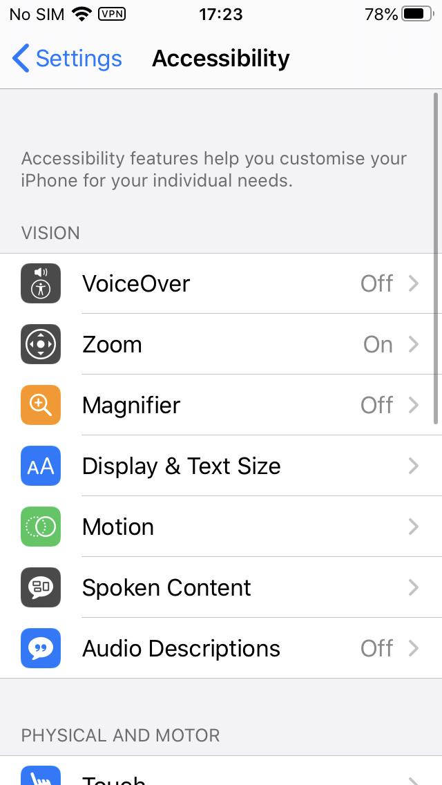
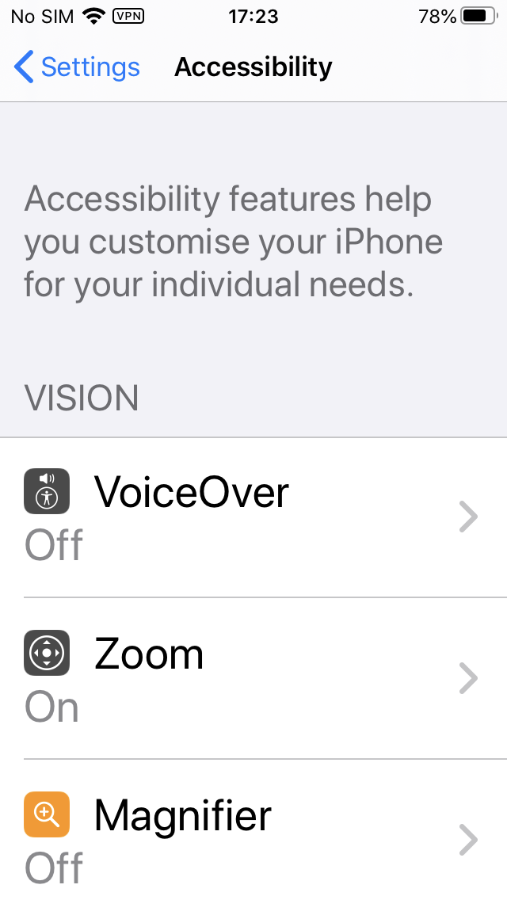

Innovative adaptation, personalization and assistive technologies
Matthew Tylee Atkinson
Zoom (and IRC)
If you'd like to say something, please use the zoom chat, or the raise hand function.
Our W3C host, plus my colleague from APA, Joshue O'Connor, will monitor the chat
We'll be taking minutes on IRC, but you don't need to join the IRC channel.
Please use zoom chat, or raise hand to talk, rather than IRC if you can.
Can anyone familiar with W3C scribe for us please?
Overview
Scene-setting (about 20 minutes)
- Background
- Assistive technologies
- Adaptations
- Human capabilities
Discussion
- Suggested discussion questions
Background
Challenges we are aiming to address
- Awareness of access needs
- Discoverability of help on offer
- e.g. iOS Magnifier—super-helpful, but low awareness in my experience
- Increased personalization of the system to meet the user's needs
Assistive technologies
- Hardware/software, often designed for a particular access need
- Screen reader
- Screen magnifier
- Alternative keyboard, or switch input
- Alternative user interface
- Different interaction modality
- Often make significant changes to output or input
Adaptations
- Generally more focused, often small, changes
- Font size setting (in OS, or browser)
- Responsive layouts
- Using text-to-speech (TTS) to read a single paragraph on a page, or a draft email
- Visually highlighting key characters or objects in a game
- Muting background music, but not speech/sounds
- …
- Often make small changes to output or input
Mobile large font support


Challenges of mobile large font support
- Clipping! Unfortunately renders a number of apps unusable.
- Scrolling
- Hard to implement (hence the clipping)
Automated interface adaptation: SUPPLE
- Different users have different devices, capabilities and preferences.
- Thus there's no one interface to fit all users and situations.
- If the UI is expressed in an abstract way (think datatypes over widgets),
- and the user's capabilities and preferences are known,
- the optimal UI for a given situation can be found.
- Multiple constraints (device; impairments; …) can be considered at once
Further information on SUPPLE
Further information on Daltonization
"Dark mode" media query
prefers-color-scheme: light|dark
Good
- Out-of-the-box adaptation
- Easily discoverable (system setting—it just works!)
Bad
- Depends on the web content author
- It just works (some prefer the choice as to when to employ it)
Discussion…
- Do you know of other adaptations?
- How can we make content more adaptive?
- How can we make browsers more adaptive?
- Are there related community groups?
- Are there any related specifications?
Conclusion
- Thank you for attending!
- Further questions?
Errata
In the session, I mentioned a figure of ~10% incidence of color perception deficit amongst males. It was pointed out by someone in the audience (I didn't catch your name; sorry) that that figure is for Caucasian males, and that it is around 0.5% for females.
I was able to find some publicly available data on the incidence of different forms of color perception deficit across populations in the Epidemiology section of Wikipedia's article "Color blindness".


Meta
Minutes from the presentation and discussion
Presentation video recording
TPAC breakout session and scheduling information
Errata